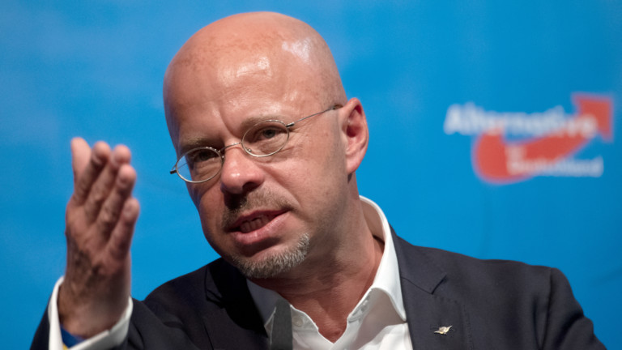

16.06.2020
AfD of Brandenburg is being watched by the Verfassungsschutz

The Verfassungsschutz is a institution to watch single persons, clubs and partys in Germany who may want to harm Germany.
They want to prevent the mistakes of Weimarer Republik. Partys shouldnt be that easy to forbid. But if their are dangerous the Verfassungsschutz is collecting evidence to forbid them.
The AfD is a right party in Germany. They often play down the nazi time, make racist statements and want to stop migration.
I think many members of this party are extremists. I think they are dangerous, they are spreading fake news and incite people to commit crimes against not german looking persons.
The Verfassungsschutz of Brandenburg sees it same and published yesterday, that they watch and infiltrate the part of the AfD Brandenburg to find evidence to forbid or not forbid the party in Brandenburg.
In my opinion this is awesome. Political caused crimes of right persons are getting more and more. Same as terroristic attacks or attack plans of right extremists.
Weapons and ammunition have been found in masses during the searching of houses of right extremists. We also have problems with right extremists in the Bundeswehr.
Maybe the Verfassungsschutz will find connections and handle the problems. I am worried about the fake news and propaganda of right persons. But I think it wont really be possible to do something against it.
They have the freedom of speach and its hard to sue someone for opinions that may incite people to commit crimes when they spread their opinion.
But I am glad we have this working system. We have to accept other opinions. I am just worried about the weapons and ammunition and personally I dont like the playing down of the nazi germany time.